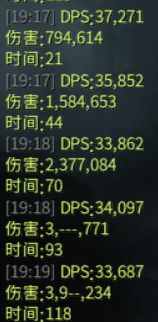
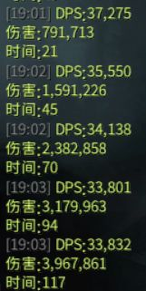
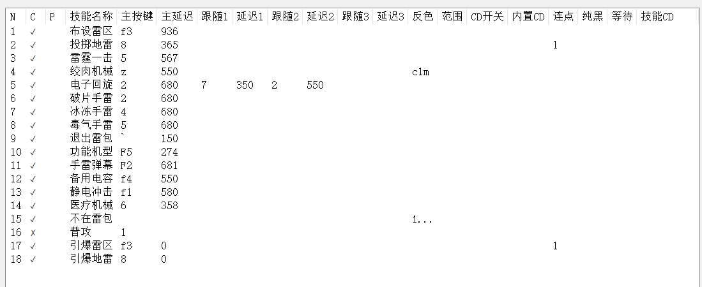
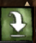

机械大锤，简易版，碎层用 34K
布设雷区，投掷地雷|雷霆一击，绞肉机械，电子回旋，破片手雷，冰冻手雷，毒气手雷，退出雷包，布设雷区，功能机型，投掷地雷，手雷弹幕，备用电容，静电冲击，医疗机械，不在雷包=普攻|引爆雷区，引爆地雷|
布设雷区,f3,936|投掷地雷,8,365,,,,,,,,,,,,,,,,,触发,0,,1|雷霆一击,5,567|绞肉机械,z,550,,,,,,,clm|电子回旋,2,680,7,350,2,550|破片手雷,2,680|冰冻手雷,4,680|毒气手雷,5,680|退出雷包,`,150|功能机型,F5,274|手雷弹幕,F2,681|备用电容,f4,550|静电冲击,f1,580|医疗机械,6,358|不在雷包,,,,,,,,,ifnot|普攻,1|引爆雷区,f3,0,,,,,,,,,,,,,,,,,触发,0,,1|引爆地雷,8
[&DQMGOyYvKz0qDwAAhgAAACYBAACuEgAAiQEAAAAAAAAAAAAAAAAAAAAAAAACMwBVAAA=]
狂战套、猎龙 大锤 武勇、冲击 克达



技能取色都挺简单
导入直接用，注意 不在雷包获取的是

这个反色，表示不在雷包才普攻，否则会打断雷包2施法。另外，感觉是国服延迟越来月高，许多以前的直伤职业，现在很多技能都卡手。
特别之炸药包，加入后会非常卡手，这里就去掉了，用来打日常本，跟碎层比较好用。
自行调节延迟，目前是锤2 跟随雷包 这里不是150毫秒 而是350毫秒，可以自行降低，确保雷2 4 5正常释放为准。
评论列表（19）
这个的原理是通过颜色判断然后模拟键盘吗？这个和显卡是i卡，双屏，不一样的键位设置有关系吗？取色后只运行第一个技能……
大佬你的按键7是哪个技能，就是电子回旋跟随的那个1技能
@111 特性导入后的通用第3个技能
@melis 投掷地雷？
@melis 而且还有一个问题，进入手雷包没有取色啊
@melis 上面电子回旋之后直接就是手雷技能了，是不是跟随的7就是进入手雷包啊
@111 手雷不用取色，大锤2用完，跟随雷包，然后释放雷包2,
投掷地雷就开始用了一次后面都没用过了是为什么啊
@幻夜 取色不对
@幻夜 我也这样
咋我只能打28k。。。。好奇怪，感觉技能都放完了，难道职业改过了？
大佬，那这样普攻是不是要在游戏里取消自动释放？
@林北 不需要，已经加了判断，游戏里自动的普攻不会打断雷包2.
起手循环=布设雷区F4
循环顺序=手雷2，手雷5，手雷4，投掷地雷2，绞肉机械3，大锤5，大锤2，备用电容F3，手雷弹幕F4，功能机型F5，布设雷区F2，静电冲击F1
独立循环=引爆雷区，引武器4黑=武器5黑=退出雷包4，绞肉机械3反=引爆地雷2，绞肉机械3反=引爆雷区F2
[技能信息]
普攻=1,100,,,,,,,colormode,clickmode
大锤2=2,400,r,150,2,600,,,clm,,,,,,,,,,触发,0,,0,,,
大锤5=5,500,,,,,,,clm,,,,,,,,,,触发,0,,0,,,
手雷2=2,600,,,,,,,clm,,,,,,,,,,触发,0,,0,,,
手雷4=4,600,,,,,,,clm,,,,,,,,,,触发,0,,0,,,
手雷5=5,600,,,,,,,clm,,,,,,,,,,触发,0,,0,,,
武器2黑=,,,,,,,,colormode,clickmode,picmode,
武器4黑=,,,,,,,,clm,,,,,,,,,,触发,0,,0,,,
武器5黑=,,,,,,,,clm,,,,,,,,,,触发,0,,0,,,
静电冲击F1=F1,650,,,,,,,clm,,,,,,,,,,触发,0,,0,,,
布设雷区F2=F4,800,,,,,,,clm,,,,,,,,,,触发,0,,0,,,
引爆雷区F2=F4,10,,,,,,,clm,,,,,,,,,,触发,0,,0,,,
备用电容F3=F2,600,,,,,,,clm,,,,,,,,,,触发,0,,0,,,
手雷弹幕F4=F3,650,,,,,,,clm,,,,,,,,,,触发,0,,0,,,
功能机型F5=F5,250,,,,,,,clm,,,,,,,,,,触发,0,,0,,,
投掷地雷2=9,350,,,,,,,clm,,,,,,,,,,触发,0,,0,,,
引爆地雷2=t,10,,,,,,,clm,,,,,,,,,,触发,0,,0,,,
绞肉机械3=7,500,,,,,,,,,,,,,,,,,触发,0,,0,,,0
退出雷包4=8,150,,,,,,,clm,,,,,,,,,,触发,0,,0,,,
绞肉机械3反=,,,,,,,,ifnot,,,,,,,,,,触发,0,,0,,,
大佬这个是我自己写的老版本的循环，这个能达到39，这
@A85759997 这个新版的不知道怎么写，你能帮我改成新版的么
@A85759997 能用就没必要重写
@melis 这个放不到新版本里，要来回切换AHK，好麻烦
@A85759997 旧版应该也有分享功能，直接用新版导入。
@A85759997 这个布设雷区F4和布设雷区F2、引武器4黑是啥意思呀